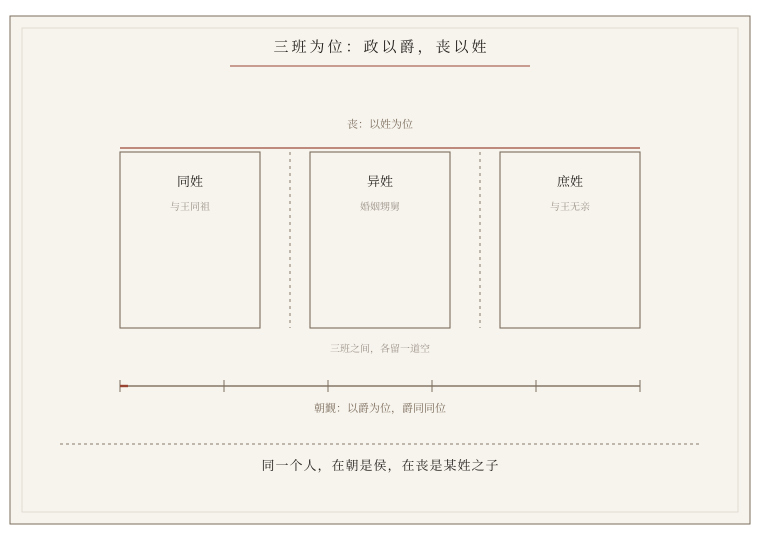

檀弓上 · 三·一百一十五 · 第 318 课
唯天子之丧，有别姓而哭。
说什么事：只有天子之丧，才有按姓分班而哭的礼。诸侯之丧则无。
落在哪一层：以「姓」量位。论「政以爵序，丧以姓序」。
为何编在此位：上二课皆言天子之丧之形，此课言天子之丧之「位」——一群人站在那里，按什么排。
【经】唯天子之喪，有別姓而哭。
【注】使諸侯同姓、異姓、庶姓，相從而為位，別於朝覲來時，朝覲爵同同位。
【疏】此一节论哭天子之事，各依文解之。注「使诸」至「同位」：「异姓」者，郑注《周礼》云「王昏姻甥舅」；「庶姓」者，谓与王无亲者。此言「朝觐爵同同位」，则不分别同姓异姓；然《觐礼》「诸侯受舍于朝，同姓西面，异姓东面」，郑注云「分别同姓异姓，受之将有先后也」；与此不同者，《觐礼》先公而后侯，先侯而后伯，是亦爵同同位，但就同姓之中，先爵尊耳，与此无别。
别姓 分姓为班。
同姓 与天子同祖者。
异姓 婚姻甥舅之国。注引郑《周礼》注。
庶姓 与天子无亲者。
为位 立其位次。
朝觐 诸侯朝见天子。
爵同同位 爵等相同者立于同位。
只有天子之丧，才分姓为班而哭：同姓一班、异姓一班、庶姓一班，各立其位——与朝觐来时不同，朝觐时是按爵，爵同则同位。
此节极短，一句话加一段注。要点全在注里的那个比较：别于朝觐来时。
朝觐之时，诸侯按爵为位：公、侯、伯、子、男，爵同则同位，不问姓。丧之时，按姓为位：同姓、异姓、庶姓，三班各立。
同一个人，在朝是「侯」，在丧是「某姓之子」。两套秩序并行，各管一处。
第一层 三分的界：血、姻、无 同姓——与王同祖；异姓——婚姻甥舅；庶姓——与王无亲。
这是以「血—姻—无」三层划尽天下。三层之外无第四层，故人人有位，无人无处。礼的第一件工作，是把所有人安置好；安置之法，是先分尽，再定位。
第二层 政以爵，丧以姓 为何朝觐按爵而丧按姓？疏未明言，然可推：朝觐是政，政以位序，位序以爵；丧是亲，亲以血序，血序以姓。
一个人身上有两重身份：在国是爵，在族是姓。礼不把这两重混在一处，各给一个场合。
第三层 「别于朝觐来时」：礼自己在提醒你 注这五个字，是礼书的习惯：凡有两制并行处，必标出「与某时不同」。
这是极重要的一笔。礼不怕两制并存，怕的是人不知其并存。标出来，则知者不混，不知者亦不致误。
第四层 疏的两存与勉强 《觐礼》有「同姓西面，异姓东面」之文，与此经「爵同同位」不合。疏如何调停？说《觐礼》「先公而后侯，先侯而后伯」，仍是爵同同位，只是同姓之中先爵尊耳。
这是一个勉强的调和——「同姓西面、异姓东面」明明是方位之别，疏却解为先后之别。读者当知其勉强，不可径以为定论。
礼疏中此类调停甚多。读之之法：见其调停处，即知此处有真歧义。
与今日何干 今人开会按职务排座，办丧按亲属排位。此节说明：两套秩序可以并行，各管一处。不要把单位的秩序带进灵堂，也不要把灵堂的秩序带进会场。带错了，两处都失礼。
| 左 | 右 |
|---|---|
| 同姓 | 与王同祖 |
| 异姓 | 婚姻甥舅 |
| 庶姓 | 与王无亲 |
| 别姓而哭 | 丧之序 |
| 朝觐爵同同位 | 政之序 |
| 生以爵 | 死以姓 |
| 唯天子 | 限此一等 |
画一处大庭，视点平视略俯。庭上三班人分列，只画衣冠与背影，不画人面：左班衣色最深、列最密，中班衣色中，右班衣色最浅、列最疏；三班之间各留一道空。远处一殿，檐角一线。不写文字。赭色只用在三班之间那两道空上，各画一道细线。
